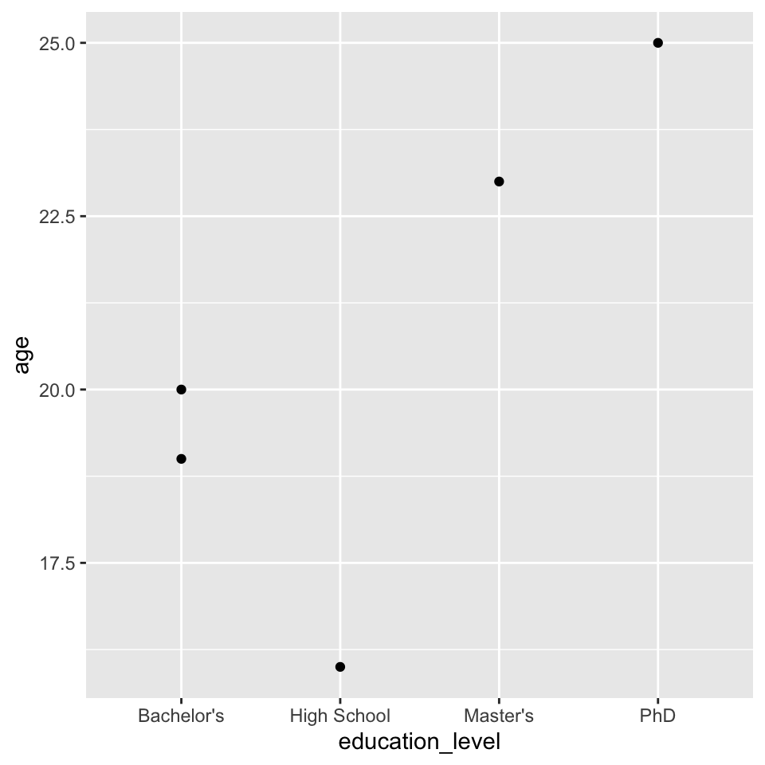
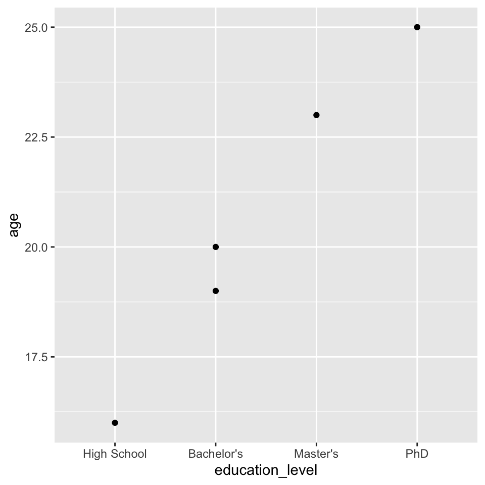
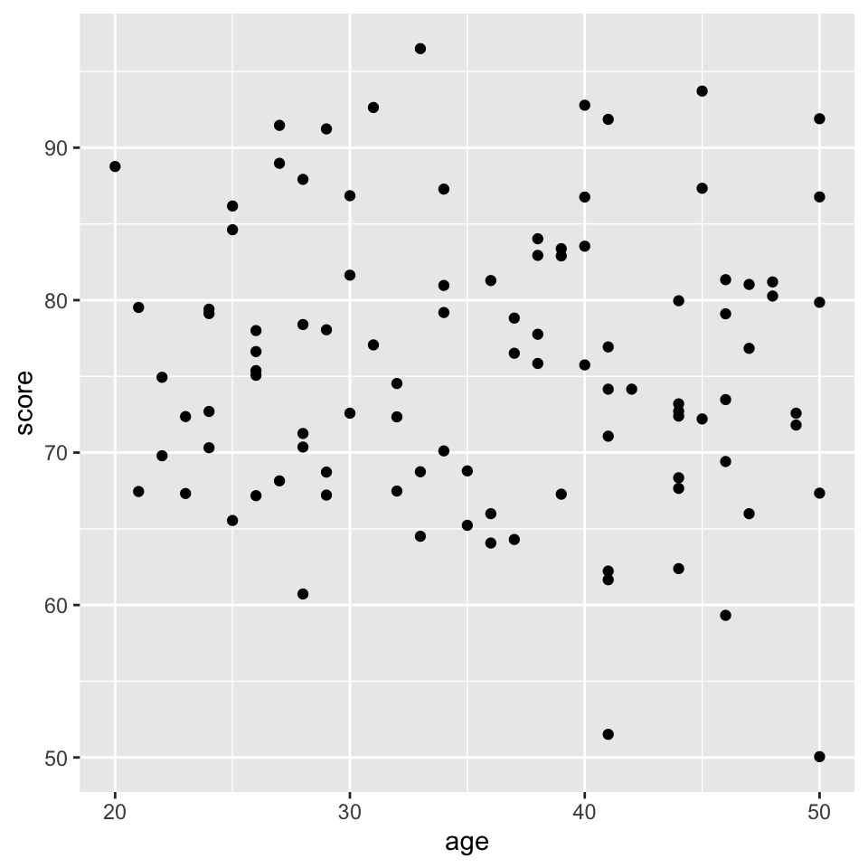
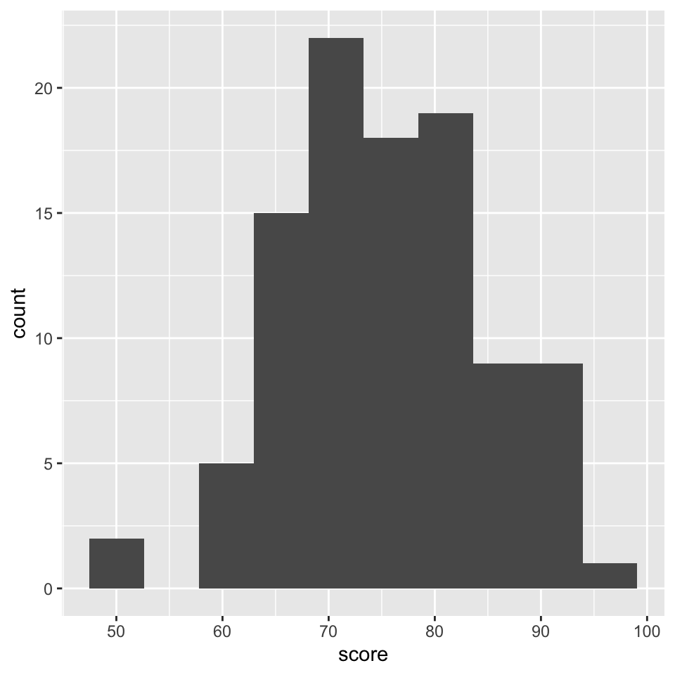
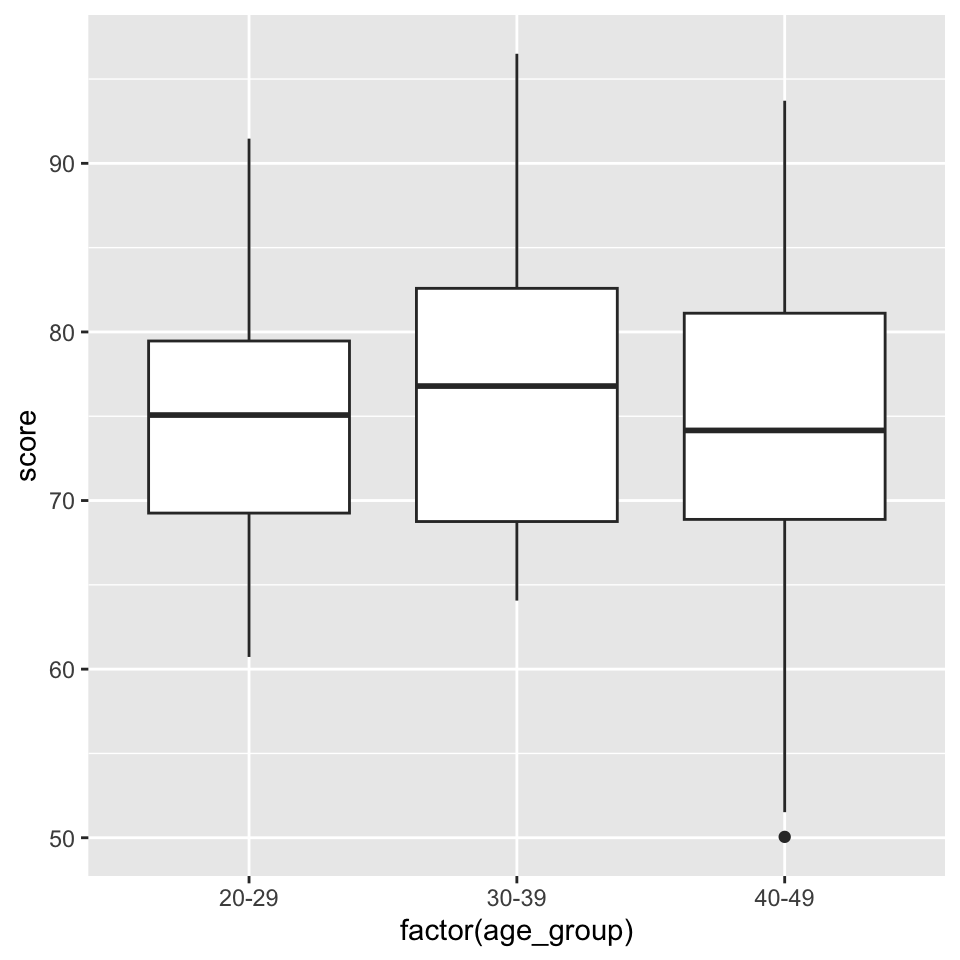
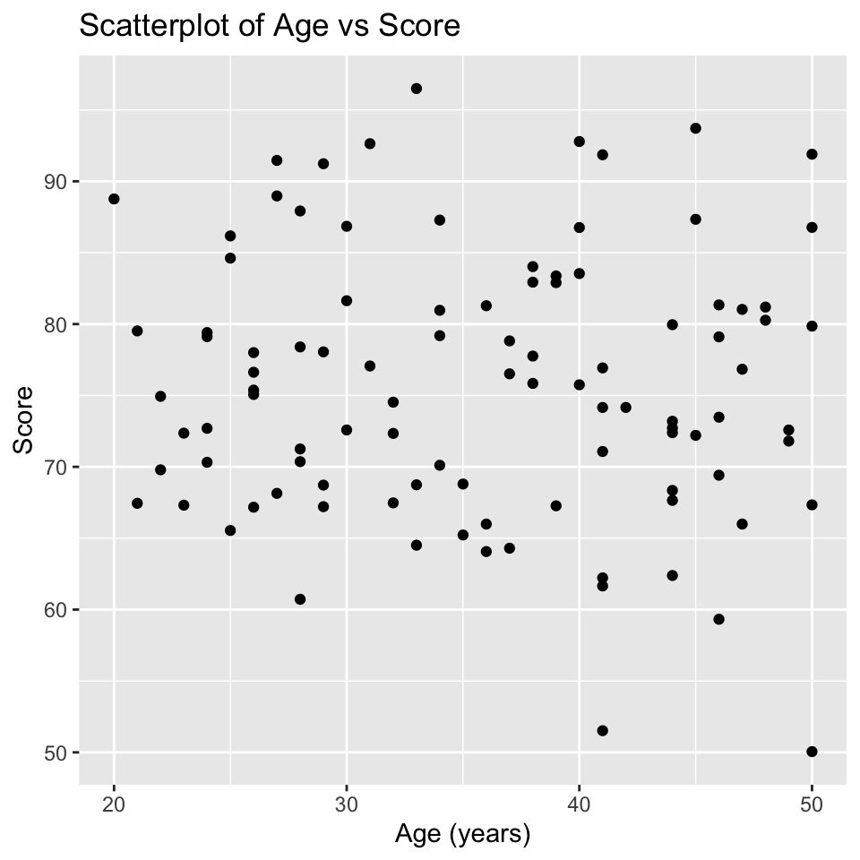
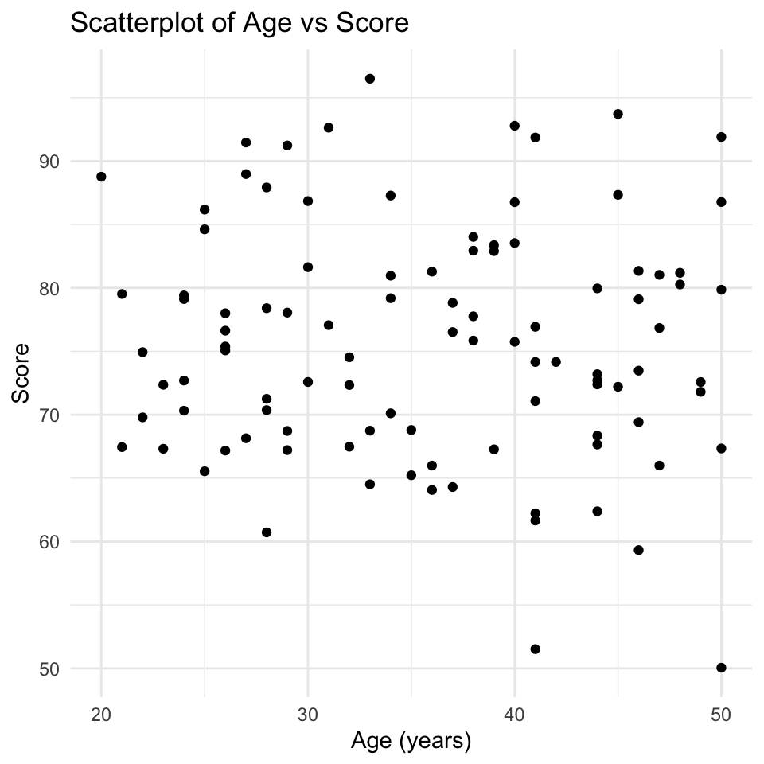
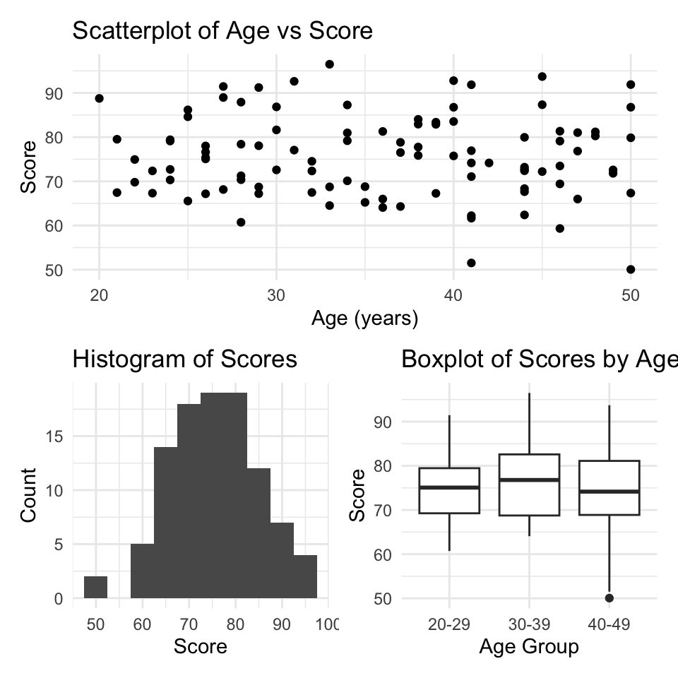

[1] 2[1] 7.389056[1] 4R is a programming language and software environment for statistical computing and graphics. RStudio is an integrated development environment (IDE) for R. RStudio provides a user-friendly interface for working with R, including a console, a script editor, and tools for managing packages and projects.
We highly recommend using RStudio to work with R.
There are two ways to use RStudio:
RStudio Desktop: a standalone application that you can install on your computer. If you choose this option, you will need to install R first, and then install RStudio. This usually requires administrator privileges on your computer. If you have problems installing add-on packages, they will have to be fixed by you or with our help (rarely we cannot find a solution). Follow the instructions on this website about how to install R and RStudio: https://posit.co/download/rstudio-desktop/.
Rstudio Cloud: a web-based version of RStudio that you can use in your web browser. You don’t need to install anything on your computer, and you can access your work from any computer with an internet connection. The Faculty of Science has a RStudio Cloud here that you can use (and will have to use during the final exam).
What do we recommend? Try the cloud first. If you like it then continue to use it.
Whether you use the RStudio application on your computer, or use RStudio on the Cloud, you are responsible for the safety and persistence of your files (data, code, etc.). Just because you’re using RStudio on the Cloud does not mean your files are automatically saved forever. Make sure to download and back up your important files regularly!
When you open RStudio, you will see a window with four main panes:
Our Scripts are in the Source pane tabs. The code / script we write in R is usually saved in a file with the extension .R. This file can be opened and edited in the Source pane. Creating a new R script: File > New File > R Script.
You can run code from the script by selecting the code and clicking the “Run” button, or by using the keyboard shortcut Ctrl + Enter (Windows) or Cmd + Enter (Mac).
There is so much more to learn about the RStudio IDE, but we will cover that as we go along in the course.
In our newly opened script file, type the following code:
Then type the following code:
[1] 2[1] 7.389056[1] 4Select all the code and run it (using the “Run” button or Ctrl + Enter / Cmd + Enter). You should see the results of the calculations in the Console pane.
Now try assigning values to named object:
And then print the value of c:
[1] 15You should see the value 15 printed in the Console pane.
We can also create vectors:
[1] 1 2 3 4 5And do maths on vectors:
[1] 2 4 6 8 10[1] 11 12 13 14 15[1] 1 4 9 16 25We can vectors of strings (text):
[1] "apple" "banana" "cherry"And can perform operations on strings:
[1] "I like apple" "I like banana" "I like cherry"[1] "APPLE" "BANANA" "CHERRY"And we can create data frames, which are like tables of data
Name Age Height
1 Alice 25 165
2 Bob 30 180
3 Charlie 35 175Above we have numerous examples of functions: exp(), sqrt(), c(), paste(), toupper(), and data.frame(). Functions are a fundamental part of R programming. They are used to perform specific tasks, such as calculations, data manipulation, and data analysis. All functions have a name and can take arguments (inputs) and return values (outputs). They are called by writing the function name followed by parentheses, with any arguments inside the parentheses.
You likely guessed that there is much much more to learn about R, but we will cover that as we go along in the course.
R has a built-in help system that you can use to get information about functions, packages, and other topics. To access the help system, you can use the ? operator followed by the name of the function or topic you want to learn about. For example, to get help on the mean() function, you would type:
This will open the help documentation for the mean() function in the Help pane of RStudio. The documentation includes a description of the function, its arguments, and examples of how to use it. Some of the help documentation is very useful and accessible, other is less so. Over time you will learn which functions and packages have good documentation, and you will get better and better at understanding R help files.
Of course you can use any other resources to get help with R, including online forums, tutorials, and books. Some popular online resources for R help include:
You can also use search engines like Google to find answers to your R questions. Just be sure to include “R” in your search query to get relevant results.
AI assistants like ChatGPT can also be useful for getting help with R programming. You can ask specific questions about R code, functions, and packages, and get instant responses.
And of course there is always your course instructors and fellow students to help you out when you get stuck.
R has a vast ecosystem of add-on packages that extend its functionality. These packages are collections of functions, data, and documentation that can be installed and loaded into your R session. There are thousands of packages available on CRAN (the Comprehensive R Archive Network) and other repositories like Bioconductor and GitHub.
We will be using several packages throughout this course. To install a package, you can use the install.packages() function. For example, to install the ggplot2 package, you would type:
You can also use the RStudio interface to install packages. Go to the “Packages” tab in the bottom right pane, click on “Install”, type the name of the package you want to install, and click “Install”.
You can see which packages are currently installed by looking in the “Packages” tab.
You only need to install a package once. After it is installed, you can load it into your R session using the library() function. Do not install packages every time you want to use them; just load them with library().
(This section concerns the Desktop version of R and RStudio, and not so much the Cloud version, because version management is handled for you in the Cloud.)
R and its add-on packages are constantly being updated and improved. This can cause problems when trying to install or use packages that depend on specific versions of R or other packages.
Imagine that the online version of a package has been updated and now only works with the lastest version of R. If you are using an older version of R, you may not be able to install or use that package.
Or if a package depends on another package that has been updated, you may need to update that package as well to use the first package.
This sounds complicated, but there are some simple steps you can take to reduce the chances of running into version-related problems:
Keep your R version up to date. New versions of R are released every 6 months or so, and they often include important bug fixes and new features. You can check your current R version by typing R.version.string in the Console. To update R, you can download the latest version from the CRAN website.
Keep your add-on packages up to date. You can update all your installed packages by using the update.packages() function. This will check for updates for all installed packages and install the latest versions. You can also use the RStudio interface to update packages by going to the “Packages” tab, clicking on “Update”, selecting the packages you want to update, and clicking “Install Updates”.
Do this well before critical deadlines or important events (e.g., exams). Updating R and packages can sometimes lead to unexpected issues, so it’s best to do it well in advance of when you need everything to work perfectly.
Nevertheless, even with these precautions, you may still encounter version-related issues from time to time. When this happens, don’t panic!
A common problem you might see is an error message when trying to install or load a package, indicating that the package requires a newer version of R or another package. The error / warning message might look like:
warning: package 'xyz' requires R version >= 4.2.0
Warning in install.packages: package ‘XYZ’ is not available (for R version 4.2.0)
These messages indicate that the package you are trying to install or load requires a newer version of R than the one you currently have. To fix this, you will need to update your R installation to the required version or higher. Then its also a good idea to update your packages as well.
RStudio is also regularly updated, with new version released every several months or so. Your version of RStudio is independent of your version of R, so you can update RStudio without changing your R version. Note that usually your version of RStudio is not as important as your version of R and the packages you are using. So updating RStudio is usually not a high priority and doesn’t often help solve problems related to add on package versions.
I always work within R Projects. R Projects help you to organise your work and keep all files related to a project in one place. They also make importing data a breeze.
But what is an R Project? An R Project is a directory (folder) that contains all the files related to a specific project. When you open an R Project, RStudio automatically sets the working directory to the project directory, so you don’t have to worry about setting the working directory manually.
To see if you’re working within an R Project, look at the top right of the RStudio window. If you see the name of your project there, you’re good to go. If you see “Project: (None)”, then you’re not working within an R Project.
If you click on the project name, a dropdown menu will appear. From there, you can create a new project, open an existing project, or switch between projects.
Create a new R Project: File > New Project > New Directory or Existing Directory > New Project > Choose a name and location for your project > Create Project.
Get organised! Put all files for a project in one folder. For example, I made a folder called BIO144_2026 and put all files related to this course in that folder. Within that folder, I have subfolders for data, scripts, and results. I then create an R Project in the BIO144_2026 folder. This way, all files related to the course are in one place, and I can easily find them later.
Now, always open and ensure you’re working within the R Project for your project. As mentioned, you can see the project name at the top right of the RStudio window. And if its not the correct project, click on the name to get the drop-down list of available projects from which you can switch to the correct one.
First, get some data sets for us to work with. XYZ You can download them from the course website or use your own data sets. Save the data files in a folder called data within your R Project directory.
We will use the readr package to import data into R. The readr package provides functions to read data from various file formats, including CSV (comma-separated values) files, tab-separated values files, and others.
To read a CSV file, we can use the read_csv() function from the readr package. For example, to read a CSV file called data.csv, we can use the following code:
This code will read the data.csv file from the data folder within the current working directory (which should be the R Project directory) and store it in a data frame called data.
Easily getting the file path In RStudio, you can easily get the file path by putting the cursor in the parentheses of the read_csv() function, the press the tab key. A drop-down menu will appear with options to navigate to the file. This way, you don’t have to type the file path manually.
Once you’ve imported your data, you can view it in several ways:
View() function to open the data frame in a new tab in RStudio.head() function to view the first few rows of the data frame.str() function to view the structure of the data frame, including the variable names and types.summary() function to get a summary of the data frame, including basic statistics for each variable.Another useful function is glimpse() from the dplyr package, which provides a quick overview of the data frame.
There are many checks you can do to ensure your data was imported correctly. For example checking if there are duplicated values in a variable when there shouldn’t be:
[1] FALSEThe function any() will return TRUE if there are any duplicated values in the Name variable, and FALSE otherwise. The function duplicated() returns a logical vector indicating which values are duplicates. We use the dollar sign $ to access a specific variable (column) in the data frame. A logical vector is a vector that contains only TRUE or FALSE values:
[1] FALSE FALSE FALSEAll three logicals are FALSE, meaning none of the three are duplicates. If there were duplicates, the corresponding positions in the logical vector would be TRUE. For example:
What do you expect the output of duplicated(example_vector) to be?
A final check (though not the final one we could do–there are many others). Let us check for missing values and get a count of how many there are in each variable. We can do this with the following tidyverse code:
Name Age Height
1 0 0 0Looks complicated eh! Well, that’s because it is, for sure. But let’s break it down:
summarise() creates a new data frame with summary statistics.across(everything(), ~ sum(is.na(.))) applies the function sum(is.na(.)) to every variable in the data frame.is.na() function returns a logical vector indicating which values are missing (NA), and the sum() function counts the number of TRUE values in that vector (i.e., the number of missing values).Let’s assume your data was imported incorrectly. This means you have to inspect it carefully. Check that the variable names are correct, that the data types are correct (e.g., numeric, character, factor), that there are the correct number of rows and columns. If you find any issues, you need to find out what caused them, fix them, and re-import the data (see below).
Common data import problems:
read_csv() function using the delim argument (e.g., read_delim("data.csv", delim = "\t") for tab-delimited files).read_csv() function using the na argument (e.g., read_csv("data.csv", na = c("NA", "-999"))).read_csv() function and press the tab key to navigate to the file.Now we have our data imported and checked, and we’re ready to start working with it. This process is called data wrangling, and it involves cleaning, transforming, and reshaping the data to make it suitable for visualisation and analysis.
The first thing I like to do is standardise and clean up the variable names. I like to use the janitor package for this:
Attaching package: 'janitor'The following objects are masked from 'package:stats':
chisq.test, fisher.testThe clean_names() function from the janitor package will convert variable names to a consistent format (lowercase, spaces replaced by underscores, no special characters).
Functions in the dplyr package are used to manipulate data frames:
select(): select columns by position, or by name, or by other methodsfilter(): select rows that meet a logical conditionslice(): select rows by positionarrange(): reorder rowsmutate(): add new variablesThe dplyr package also provides functions to group data frames and to summarize data:
group_by(): add to a data frame a grouping structuresummarize(): summarize data, respecting any grouping structure specified by group_by()The pipe operator |> is used to chain together multiple operations on a data frame.
Note that you will often see another pipe operator %>% used in examples. The pipe operator |> is a newer version of %>% that is more efficient and easier to use. The pipe operator |> is available in R version 4.1.0 and later.
Lets work through some examples with a sample data frame:
Here is the same dataset with 100 rows:
We can select columns by name
# A tibble: 100 × 2
name score
<chr> <dbl>
1 Person_001 91.9
2 Person_002 87.3
3 Person_003 77.8
4 Person_004 64.5
5 Person_005 69.8
6 Person_006 91.2
7 Person_007 64.3
8 Person_008 91.9
9 Person_009 72.6
10 Person_010 70.3
# ℹ 90 more rowsWe can select columns by position
# A tibble: 100 × 2
name score
<chr> <dbl>
1 Person_001 91.9
2 Person_002 87.3
3 Person_003 77.8
4 Person_004 64.5
5 Person_005 69.8
6 Person_006 91.2
7 Person_007 64.3
8 Person_008 91.9
9 Person_009 72.6
10 Person_010 70.3
# ℹ 90 more rowsWe can select columns by a condition, for example select only the numeric columns:
# A tibble: 100 × 2
age score
<int> <dbl>
1 50 91.9
2 34 87.3
3 38 77.8
4 33 64.5
5 22 69.8
6 29 91.2
7 37 64.3
8 41 91.9
9 30 72.6
10 24 70.3
# ℹ 90 more rowsWe can select a column by pattern matching, using helper functions, for example select columns that contain the letter “a”:
# A tibble: 100 × 2
name age
<chr> <int>
1 Person_001 50
2 Person_002 34
3 Person_003 38
4 Person_004 33
5 Person_005 22
6 Person_006 29
7 Person_007 37
8 Person_008 41
9 Person_009 30
10 Person_010 24
# ℹ 90 more rowsOther helpers include starts_with(), ends_with(), matches(), and everything().
To get particular rows of data, we can use the filter() function. This function takes a logical condition as an argument and returns only the rows that meet that condition. For example, to get all rows where the Age is greater than 30:
# A tibble: 66 × 3
name age score
<chr> <int> <dbl>
1 Person_001 50 91.9
2 Person_002 34 87.3
3 Person_003 38 77.8
4 Person_004 33 64.5
5 Person_007 37 64.3
6 Person_008 41 91.9
7 Person_011 39 67.3
8 Person_012 33 96.5
9 Person_013 41 61.7
10 Person_014 44 80.0
# ℹ 56 more rowsHere, the logical condition is age > 30.
We can combine multiple conditions using the logical operators & (and), | (or), and ! (not). For example, to get all rows where the Age is greater than 30 and the Score is less than 90:
# A tibble: 60 × 3
name age score
<chr> <int> <dbl>
1 Person_002 34 87.3
2 Person_003 38 77.8
3 Person_004 33 64.5
4 Person_007 37 64.3
5 Person_011 39 67.3
6 Person_013 41 61.7
7 Person_014 44 80.0
8 Person_015 45 87.3
9 Person_016 46 81.3
10 Person_018 38 82.9
# ℹ 50 more rowsOther logical operators include == (equal to), != (not equal to), <= (less than or equal to), and >= (greater than or equal to).
The slice() function allows us to get rows by their position in the data frame. For example, to get the first two rows:
# A tibble: 2 × 3
name age score
<chr> <int> <dbl>
1 Person_001 50 91.9
2 Person_002 34 87.3I very rarely use this function, as I prefer to use filter() with logical conditions. I can’t think of a good use case for this function right now! Perhaps you can?
The arrange() function allows us to reorder the rows of a data frame based on the values in one or more columns. For example, to reorder the rows by Age in ascending order:
# A tibble: 100 × 3
name age score
<chr> <int> <dbl>
1 Person_064 20 88.8
2 Person_056 21 79.5
3 Person_091 21 67.4
4 Person_005 22 69.8
5 Person_025 22 74.9
6 Person_033 23 67.3
7 Person_092 23 72.4
8 Person_010 24 70.3
9 Person_017 24 79.1
10 Person_058 24 72.7
# ℹ 90 more rowsI f we want to reorder the rows by Age in descending order, we can use the desc() function:
# A tibble: 100 × 3
name age score
<chr> <int> <dbl>
1 Person_001 50 91.9
2 Person_061 50 79.9
3 Person_075 50 67.3
4 Person_085 50 50.1
5 Person_096 50 86.8
6 Person_031 49 71.8
7 Person_078 49 72.6
8 Person_024 48 81.2
9 Person_057 48 80.3
10 Person_021 47 66.0
# ℹ 90 more rowsIt’s unusual to need the rows of a dataset to be arranged in a specific order, but it can be useful when looking at the data directly.
Note that when you view the data in RStudio, it will always be arranged by the row number. In the viewer you can sort by clicking on the column headers.
The mutate() function allows us to add new variables to a data frame. For example, to add a new variable called Age_in_5_years that is the Age plus 5:
# A tibble: 100 × 4
name age score age_in_5_years
<chr> <int> <dbl> <dbl>
1 Person_001 50 91.9 55
2 Person_002 34 87.3 39
3 Person_003 38 77.8 43
4 Person_004 33 64.5 38
5 Person_005 22 69.8 27
6 Person_006 29 91.2 34
7 Person_007 37 64.3 42
8 Person_008 41 91.9 46
9 Person_009 30 72.6 35
10 Person_010 24 70.3 29
# ℹ 90 more rowsWe can add multiple new variables at once:
# A tibble: 100 × 5
name age score age_in_5_years percentage_score
<chr> <int> <dbl> <dbl> <dbl>
1 Person_001 50 91.9 55 0.919
2 Person_002 34 87.3 39 0.873
3 Person_003 38 77.8 43 0.778
4 Person_004 33 64.5 38 0.645
5 Person_005 22 69.8 27 0.698
6 Person_006 29 91.2 34 0.912
7 Person_007 37 64.3 42 0.643
8 Person_008 41 91.9 46 0.919
9 Person_009 30 72.6 35 0.726
10 Person_010 24 70.3 29 0.703
# ℹ 90 more rowsVariables in a data frame in R have a type. The most common types of variables are numeric and categorical. Numeric variables are variables that take on numerical values, such as age or score. Categorical variables are variables that take on a limited number of values, often representing categories or groups. In R, categorical variables are typically have type <chr> which is character. Or they can be of type <fct> which is factor.
When we import data categorical variable is usually imported as a character variable. For example, the variable name in our example dataset is a categorical variable of type character. Look at the first few rows of the dataset again, and see that below the variable name it says <chr> for the name variable:
# A tibble: 100 × 3
name age score
<chr> <int> <dbl>
1 Person_001 50 91.9
2 Person_002 34 87.3
3 Person_003 38 77.8
4 Person_004 33 64.5
5 Person_005 22 69.8
6 Person_006 29 91.2
7 Person_007 37 64.3
8 Person_008 41 91.9
9 Person_009 30 72.6
10 Person_010 24 70.3
# ℹ 90 more rowsThis is all totally fine. There are, however, use cases where we might want to convert a character variable to a factor variable. Factors are useful when we have a categorical variable with a fixed number of levels, and we want to specify the order of those levels. For example, if we had a variable called education_level with the values “High School”, “Bachelor’s”, “Master’s”, and “PhD”, we might want to convert this variable to a factor and specify the order of the levels.
Let’s make a new dataset to illustrate this:
Look at the structure of this new dataset:
# A tibble: 5 × 3
name education_level age
<chr> <chr> <dbl>
1 Alice Bachelor's 19
2 Bob Master's 23
3 Charlie PhD 25
4 David High School 16
5 Eve Bachelor's 20We can see that the education_level variable is of type <chr>, which is character.
We can convert the education_level variable to a factor:
# A tibble: 5 × 3
name education_level age
<chr> <fct> <dbl>
1 Alice Bachelor's 19
2 Bob Master's 23
3 Charlie PhD 25
4 David High School 16
5 Eve Bachelor's 20Now, the education_level variable is of type <fct>, which is factor.
Here is a graph of age by education level:

We have a problem here: the education levels are not in a sensible order. The first level is “Bachelor’s”, followed by “High School”, “Master’s”, and “PhD”.
Why do you think the levels are in this order? We didn’t tell R to order them like this! The answer is that R orders factor levels alphabetically by default. So when we convert a character variable to a factor without specifying the order of the levels, R will order them alphabetically.
It would be much better to have the levels ordered as “High School”, “Bachelor’s”, “Master’s”, and “PhD”.
We can fix this by specifying the order of the levels when we convert the variable to a factor:
Now when we plot the data again, the education levels are in the correct order:

Another use case is when we are making a linear model and want to specify the reference level for a categorical variable. We will look at this when we get to linear models. If you want to skip ahead, you can see how this works in a section at the end of this chapter (Section Setting a reference level in a linear model).
There are many many many types of data visualisation. We will not explore them all in this course! In fact, we will use only a few basic types of visualisation, but we will use them well and critically. The three types of visualisation we will focus on are scatter plots, histograms, and box and whisker plots.
Scatterplots are used to visualise the relationship between two continuous variables. Here is an example of a scatterplot:

Histograms are used to visualise the distribution of a single continuous variable. The axiss are different to scatterplots: the x-axis is the variable being measured, and the y-axis is the count (or frequency) of observations in each bin. A bin is a range of values. Here is an esample of a histogram:

Box and whisker plots are used to visualise the distribution of a continuous variable across different categories. Here is an example of a box and whisker plot. First we add a new variable that is age group:
The new variable age_group is a categorical variable with three levels: “20-29”, “30-39”, and “40-49”. We make this using the case_when() function. This function works by checking each condition (which are given as the arguments to the function) in turn, and assigning the corresponding value when the condition is true. Now we can make the box and whisker plot:

We have used the ggplot2 package to create visualisations. The ggplot2 package is based on the grammar of graphics, which provides a consistent way to create visualisations. It is amazing, and when it was created it revolutionised data visualisation in R.
You can see that for each of the three visualisations, we use the ggplot() function to create the base plot, and then we add layers to the plot using the + operator.
The first argument to the ggplot() function is the data frame that we want to visualise. The layers that we add to the plot each have two main components. The first component is the aesthetic mappings, which specify how the variables in the data frame are mapped to the visual properties of the plot (e.g., x-axis, y-axis, color, size). The second component is the geometric object, which defines how the data is represented in the plot (e.g., points, lines, bars).
The aesthetic mappings are specified using the aes() function, which takes arguments that define the mappings. Inside the aes() function, we specify the variables from the data frame that we want to map to the visual properties of the plot. For example, in the scatterplot, we map the age variable to the x-axis and the score variable to the y-axis using aes(x = age, y = score).
The geometric object is specified using functions that start with geom_, such as geom_point(), geom_histogram(), and geom_boxplot().
You will notice that for the scatterplot and the box and whisker plot, we specify both an x- and a y-variable, but for the histogram we only specify an x-variable. This is because histograms only have one variable, which is the variable being measured. The y-axis is automatically calculated as the count (or frequency) of observations in each bin.
We can customise many features of the graph using additional arguments to the ggplot() function and the geom_ functions. For example, we can add titles and labels to the axes using the labs() function:

We can also change the theme of the plot using the theme_ functions. For example, to use a minimal theme, and add it the customisations we already made:

There are a million and one ways to customise visualisations in ggplot2. We will explore many of them during the course in a rather ad-hoc way. In this course we do not assess your skill and competence in making clear and beautiful visualisations. We will, however, be very happy to help you make beautiful and effective visualisations for your assignments and projects. And please be sure that making beautiful and effective visualisations is a skill that is very highly valued in the workplace.
Another feature that is very useful is to save ggplot visualisations to objects and then save to a file (for example a pdf). First, here is how we save a ggplot to an object:
Now we can save the plot to a file using the ggsave() function:
Note two things about the ggsave() function. First, the first argument is the file name (including the file extension). The file extension determines the file type (e.g., pdf, png, jpeg). Second, we can specify the width and height of the plot in inches.
Also note that the file is saved to the current working directory. When you’re working in an R project, this is usually the base directory of the project. If you want to save your plots in a folder named plots you would first need to create the folder (if it doesn’t already exist) and then specify the path in the file name:
Warning in dir.create("plots"): 'plots' already existsWe don’t explicitly ask you to make reports using Quarto in this course, but it is a very useful skill to have, and I highly recommend you explore it further in your own time. Here are a few basics to get you started.
One of the great features of R and RStudio is the ability to create reports that combine text, code, and visualisations. One of the most popular tools for this is Quarto (https://quarto.org/), which allows you to create documents in various formats (HTML, PDF, Word, etc.) using a combination of Markdown and R code.
**Why is this so great???* If you want to show someone your analysis and visualisation, say a team member or supervisor, it is often good to prepare a report that explains what you did, perhaps shows the code you used, and presents the results (including visualisations). One way to go about this is to prepare a powerpoint presentation or a word document, and then copy and paste code and visualisations into the document. Its what I used to do. It works. But it is tedious, error prone, and when you change something in your code or data, you have to remember to go back and update the powerpoint or word document.
With Quarto, you can create a report that automatically includes the code and visualisations directly from your R script. This way, if you change the code or data, you can simply re-render the report and everything is automatically updated. It takes away a lot of the tediousness and potential for errors. And it makes updating reports much easier.
If you’d like to get started with Quarto, check out the Quarto website (https://quarto.org/) and the RStudio Quarto documentation (https://quarto.org/docs/get-started/). There are also many tutorials and resources available online to help you learn how to use Quarto effectively.
If you have questions about Quarto, feel free to ask me or TAs during the practicals, though note that any particular TAs may or may not be experienced with Quarto themselves.
We often make multiple ggplots in our analyses. Sometimes it is useful to combine multiple plots into a single figure for easier comparison or presentation. We can do with ggplots and the lovely add-on package called patchwork. The patchwork package allows us to combine multiple ggplots into a single plot layout. Here is an example of how to use patchwork to combine the three plots we made earlier (scatterplot, histogram, and boxplot):
First, load the patchwork package:
Next make the first plot and assign it to an object:
Now make the second plot and assign it to an object:
Now make the third plot and assign it to an object:
Now we can combine the three plots into a single layout using the patchwork syntax. Here, we arrange plot1 on the top row, and plot2 and plot3 side by side on the bottom row:

Amazing eh! OK, lets leave it there for now. We’ll use ggplot2 throughout the course, and explore more features as we go along.
Sometimes when fitting linear models with categorical explanatory (independent) variables, it is useful to set a specific reference level for the categorical variable. This can help in interpreting the model coefficients. In R, we can set the reference level using the relevel() function or by using the factor() function with the levels argument.
First, let’s create a simple dataset:
By default, R will set the first level of the factor (in alphabetical order) as the reference level. In this case, “Aspirin” would be the reference level. Therefore when we visualise the data:

It would be nicer to have the “Control” group as the first level on the left of the x-axis.
Likewise, when we make a linear model:
Call:
lm(formula = response ~ treatment, data = my_data)
Residuals:
1 2 3 4 5 6
0.5 -0.5 -0.5 -0.5 0.5 0.5
Coefficients:
Estimate Std. Error t value Pr(>|t|)
(Intercept) 7.5000 0.5000 15.000 0.000643 ***
treatmentControl -3.0000 0.7071 -4.243 0.023981 *
treatmentIbuprofen -1.0000 0.7071 -1.414 0.252215
---
Signif. codes: 0 '***' 0.001 '**' 0.01 '*' 0.05 '.' 0.1 ' ' 1
Residual standard error: 0.7071 on 3 degrees of freedom
Multiple R-squared: 0.8615, Adjusted R-squared: 0.7692
F-statistic: 9.333 on 2 and 3 DF, p-value: 0.05152The (Intercept) term corresponds to the “Aspirin” group, and the coefficients for “Control” and “Ibuprofen” are relative to “Aspirin”. R has done this because in the factor levels, “Aspirin” comes first alphabetically and was therefore set as the reference level when the factor variable was created.
If we want to set “Control” as the reference level, we can do so using relevel():
Now when we visualise the data again:

Magic! The “Control” group is now the first level on the left of the x-axis.
And when we fit the linear model again:
Call:
lm(formula = response ~ treatment, data = my_data)
Residuals:
1 2 3 4 5 6
0.5 -0.5 -0.5 -0.5 0.5 0.5
Coefficients:
Estimate Std. Error t value Pr(>|t|)
(Intercept) 4.5000 0.5000 9.000 0.0029 **
treatmentAspirin 3.0000 0.7071 4.243 0.0240 *
treatmentIbuprofen 2.0000 0.7071 2.828 0.0663 .
---
Signif. codes: 0 '***' 0.001 '**' 0.01 '*' 0.05 '.' 0.1 ' ' 1
Residual standard error: 0.7071 on 3 degrees of freedom
Multiple R-squared: 0.8615, Adjusted R-squared: 0.7692
F-statistic: 9.333 on 2 and 3 DF, p-value: 0.05152The (Intercept) term now corresponds to the “Control” group, and the coefficients for “Aspirin” and “Ibuprofen” are relative to “Control”. This makes interpretation of the model coefficients more intuitive.